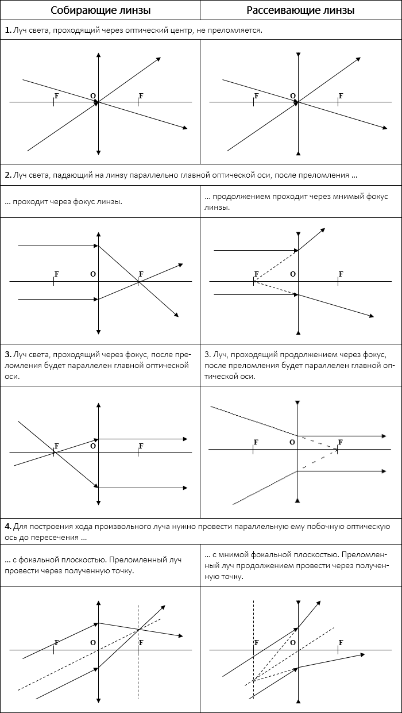

Свет – это электромагнитные волны, длины волн которых лежат для среднего глаза человека в пределах от 400 до 760 нм. В этих пределах свет называется видимым. Свет с наибольшей длиной волны кажется нам красным, а с наименьшей – фиолетовым. Запомнить чередование цветов спектра легко с помощью поговорки «Каждый Охотник Желает Знать, Где Сидит Фазан». Первые буквы слов поговорки соответствуют первым буквам основных цветов спектра в порядке убывания длины волны (и соответственно возрастания частоты): «Красный – Оранжевый – Желтый – Зеленый – Голубой – Синий – Фиолетовый». Свет с большими, чем у красного, длинами волн, называется инфракрасным. Его наш глаз не замечает, но наша кожа фиксирует такие волны в виде теплового излучения. Свет с меньшими, чем у фиолетового, длинами волн, называется ультрафиолетовым.
Электромагнитные волны (и, в частности, световые волны, или просто свет) – это распространяющееся в пространстве и во времени электромагнитное поле. Электромагнитные волны поперечны – векторы электрической напряженности и магнитной индукции перпендикулярны друг другу и лежат в плоскости, перпендикулярной направлению распространения волны. Световые волны, как и любые другие электромагнитные волны, распространяются в веществе с конечной скоростью, которая может быть рассчитана по формуле:
где: ε и μ – диэлектрическая и магнитная проницаемости вещества, ε0 и μ0 – электрическая и магнитная постоянные: ε0 = 8,85419·10–12 Ф/м, μ0 = 1,25664·10–6 Гн/м. Скорость света в вакууме (где ε = μ = 1) постоянна и равна с = 3∙108 м/с, она также может быть вычислена по формуле:
Скорость света в вакууме является одной из фундаментальных физических постоянных. Если свет распространяется в какой-либо среде, то скорость его распространения также выражается следующим соотношением:
где: n – показатель преломления вещества – физическая величина, показывающая во сколько раз скорость света в среде меньше чем в вакууме. Показатель преломления, как видно из предыдущих формул, может быть рассчитан следующим образом:
- Свет переносит энергию. При распространении световых волн возникает поток электромагнитной энергии.
- Световые волны испускаются в виде отдельных квантов электромагнитного излучения (фотонов) атомами или молекулами.
Кроме света существуют и другие виды электромагнитных волн. Далее они перечислены по уменьшению длины волны (и соответственно, по возрастанию частоты):
- Радиоволны;
- Инфракрасное излучение;
- Видимый свет;
- Ультрафиолетовое излучение;
- Рентгеновское излучение;
- Гамма-излучение.
ИНТЕРФЕРЕНЦИЯ
Интерференция – одно из ярких проявлений волновой природы света. Оно связано с перераспределением световой энергии в пространстве при наложении так называемых когерентных волн, то есть волн, имеющих одинаковые частоты и постоянную разность фаз. Интенсивность света в области перекрытия пучков имеет характер чередующихся светлых и темных полос, причем в максимумах интенсивность больше, а в минимумах меньше суммы интенсивностей пучков. При использовании белого света интерференционные полосы оказываются окрашенными в различные цвета спектра.
Для расчета интерференции используется понятие оптической длины пути. Пусть свет прошел расстояние L в среде с показанием преломления n. Тогда его оптическая длина пути рассчитывается по формуле:
Для интерференции необходимо наложение хотя бы двух лучей. Для них вычисляется оптическая разность хода (разность оптических длин) по следующей формуле:
Именно эта величина и определяет, что получится при интерференции: минимум или максимум. Запомните следующее: интерференционный максимум (светлая полоса) наблюдается в тех точках пространства, в которых выполняется следующее условие:
Разность фаз колебаний при этом составляет:
При m = 0 наблюдается максимум нулевого порядка, при m = ±1 максимум первого порядка и так далее. Интерференционный минимум (темная полоса) наблюдается при выполнении следующего условия:

Разность фаз колебаний при этом составляет:
При первом нечетном числе (единица) будет минимум первого порядка, при втором (тройка) минимум второго порядка и т.д. Минимума нулевого порядка не бывает.
ДИФРАКЦИЯ. ДИФРАКЦИОННАЯ РЕШЕТКА
Дифракцией света называется явление отклонения света от прямолинейного направления распространения при прохождении вблизи препятствий, размеры которых сопоставимы с длиной волны света (огибание светом препятствий). Как показывает опыт, свет при определенных условиях может заходить в область геометрической тени (то есть быть там, где его быть не должно). Если на пути параллельного светового пучка расположено круглое препятствие (круглый диск, шарик или круглое отверстие в непрозрачном экране), то на экране, расположенном на достаточно большом расстоянии от препятствия, появляется дифракционная картина – система чередующихся светлых и темных колец. Если препятствие имеет линейный характер (щель, нить, край экрана), то на экране возникает система параллельных дифракционных полос.
Дифракционные решетки представляют собой периодические структуры, выгравированные специальной делительной машиной на поверхности стеклянной или металлической пластинки. У хороших решеток параллельные друг другу штрихи имеют длину порядка 10 см, а на каждый миллиметр приходится до 2000 штрихов. При этом общая длина решетки достигает 10–15 см. Изготовление таких решеток требует применения самых высоких технологий. На практике применяются также и более грубые решетки с 50–100 штрихами на миллиметр, нанесенными на поверхность прозрачной пленки.
При нормальном падении света на дифракционную решетку в некоторых направлениях (помимо того, в котором изначально падал свет) наблюдаются максимумы. Для того, чтобы наблюдался интерференционный максимум, должно выполняться следующее условие:
где: d – период (или постоянная) решетки (расстояние между соседними штрихами), m – целое число, которое называется порядком дифракционного максимума. В тех точках экрана, для которых это условие выполнено, располагаются так называемые главные максимумы дифракционной картины.
ЗАКОНЫ ГЕОМЕТРИЧЕСКОЙ ОПТИКИ
Геометрическая оптика – это раздел физики, в котором не учитываются волновые свойства света. Основные законы геометрической оптики были известны задолго до установления физической природы света.
Оптически однородная среда - это среда, во всем объеме которой показатель преломления остаётся неизменным.
Закон прямолинейного распространения света: в оптически однородной среде свет распространяется прямолинейно. Этот закон приводит к представлению о световом луче как о геометрической линии, вдоль которой распространяется свет. Следует отметить, что закон прямолинейного распространения света нарушается и понятие светового луча утрачивает смысл, если свет проходит через малые отверстия, размеры которых сравнимы с длиной волны (в этом случае наблюдается дифракция).
На границе раздела двух прозрачных сред свет может частично отразиться так, что часть световой энергии будет распространяться после отражения по новому направлению, а частично пройти через границу и распространяться во второй среде.
Закон отражения света: падающий и отраженный лучи, а также перпендикуляр к границе раздела двух сред, восстановленный в точке падения луча, лежат в одной плоскости (плоскость падения). Угол отражения γ равен углу падения α. Заметьте, что все углы в оптике измеряются от перпендикуляра к границе раздела двух сред.
Закон преломления света (закон Снеллиуса): падающий и преломленный лучи, а также перпендикуляр к границе раздела двух сред, восстановленный в точке падения луча, лежат в одной плоскости. Отношение синуса угла падения α к синусу угла преломления β есть величина, постоянная для двух данных сред, и определяется выражением:
Закон преломления был экспериментально установлен голландским ученым В.Снеллиусом в 1621 году. Постоянную величину n21 называют относительным показателем преломления второй среды относительно первой. Показатель преломления среды относительно вакуума называют абсолютным показателем преломления.
Среду с большим значением абсолютного показателя называют оптически более плотной, а с меньшим – менее плотной. При переходе из менее плотной среды в более плотную луч «прижимается» к перпендикуляру, а при переходе из более плотной в менее плотную – «удаляется» от перпендикуляра. Единственный случай, когда луч не преломляется, это если угол падения равен 0 (то есть лучи перпендикулярны границе раздела сред).
При переходе света из оптически более плотной среды в оптически менее плотную n2 < n1 (например, из стекла в воздух) можно наблюдать явление полного внутреннего отражения, то есть исчезновение преломленного луча. Это явление наблюдается при углах падения, превышающих некоторый критический угол αпр, который называется предельным углом полного внутреннего отражения. Для угла падения α = αпр, sinβ = 1, так как β = 90°, это значит, что преломленный луч идет вдоль самой границы раздела, при этом, согласно закону Снеллиуса, выполняется следующее условие:
Как только угол падения становиться больше предельного, то преломленный луч уже не просто идет вдоль границы, а он и вовсе не появляется, так как его синус теперь уж должен быть больше единицы, а такого не может быть.
ЛИНЗЫ
Линзой называется прозрачное тело, ограниченное двумя сферическими поверхностями. Если толщина самой линзы мала по сравнению с радиусами кривизны сферических поверхностей, то линзу называют тонкой.
Линзы бывают собирающими и рассеивающими. Если показатель преломления линзы больше, чем окружающей среды, то собирающая линза в середине толще, чем у краев, рассеивающая линза, наоборот, в средней части тоньше. Если показатель преломления линзы меньше, чем окружающей среды, то всё наоборот.
Прямая, проходящая через центры кривизны сферических поверхностей, называется главной оптической осью линзы. В случае тонких линз можно приближенно считать, что главная оптическая ось пересекается с линзой в одной точке, которую принято называть оптическим центром линзы. Луч света проходит через оптический центр линзы, не отклоняясь от первоначального направления. Все прямые, проходящие через оптический центр, называются побочными оптическими осями.
Если на линзу направить пучок лучей, параллельных главной оптической оси, то после прохождения через линзу лучи (или их продолжения) соберутся в одной точке F, которая называется главным фокусом линзы. У тонкой линзы имеются два главных фокуса, симметрично расположенных относительно линзы на главной оптической оси. У собирающих линз фокусы действительные, у рассеивающих – мнимые. Расстояние между оптическим центром линзы O и главным фокусом F называется фокусным расстоянием. Оно обозначается той же буквой F.
ПРАВИЛА ПОСТРОЕНИЯ ХОДА ЛУЧА В ЛИНЗАХ

ФОРМУЛА ЛИНЗЫ
Основное свойство линз – способность давать изображения предметов. Изображение – это точка пространства, где пересекаются лучи (или их продолжения), испущенные источником после преломления в линзе. Изображения бывают прямыми и перевернутыми, действительными (пересекаются сами лучи) и мнимыми (пересекаются продолжения лучей), увеличенными и уменьшенными.
Положение изображения и его характер можно определить с помощью геометрических построений. Для этого используют свойства некоторых стандартных лучей, ход которых известен. Это лучи, проходящие через оптический центр или один из фокусов линзы, а также лучи, параллельные главной или одной из побочных оптических осей.
Для простоты можно запомнить, что изображение точки будет точкой. Изображение точки, лежащей на главной оптической оси, лежит на главной оптической оси. Изображение отрезка – отрезок. Если отрезок перпендикулярен главной оптической оси, то его изображение перпендикулярно главной оптической оси. А вот если отрезок наклонен к главной оптической оси под некоторым углом, то его изображение будет наклонено уже под некоторым другим углом.
Изображения можно также рассчитать с помощью формулы тонкой линзы. Если кратчайшее расстояние от предмета до линзы обозначить через d, а кратчайшее расстояние от линзы до изображения через f, то формулу тонкой линзы можно записать в виде:
Величину D, обратную фокусному расстоянию. называют оптической силой линзы. Единица измерения оптической силы является 1 диоптрия (дптр). Диоптрия – оптическая сила линзы с фокусным расстоянием 1 м.
Фокусным расстояниям линз принято приписывать определенные знаки: для собирающей линзы F > 0, для рассеивающей F < 0. Оптическая сила рассеивающей линзы также отрицательна.
Величины d и f также подчиняются определенному правилу знаков: f > 0 – для действительных изображений; f < 0 – для мнимых изображений. Перед d знак «–» ставится только в том случае, когда на линзу падает сходящийся пучок лучей. Тогда их мысленно продлевают до пересечения за линзой, помещают туда воображаемый источник света, и определяют для него расстояние d.
В зависимости от положения предмета по отношению к линзе изменяются линейные размеры изображения. Линейным увеличением линзы Γ называют отношение линейных размеров изображения и предмета. Для линейного увеличения линзы существует формула:
Во многих оптических приборах свет последовательно проходит через две или несколько линз. Изображение предмета, даваемое первой линзой, служит предметом (действительным или мнимым) для второй линзы, которая строит второе изображение предмета и так далее.